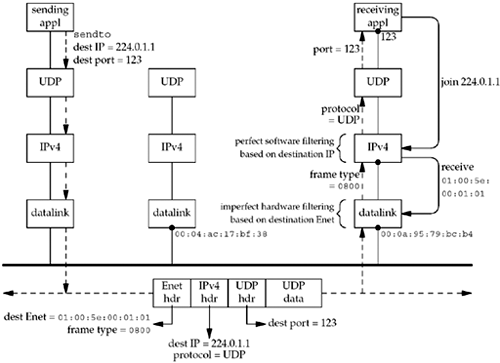

| [ Team LiB ] |
|
21.3 Multicasting versus Broadcasting on a LANWe now return to the examples in Figures 20.3 and 20.4 to show what happens in the case of multicasting. We use IPv4 for the example shown in Figure 21.4, but the steps are similar for IPv6. Figure 21.4. Multicast example of a UDP datagram. The receiving application on the rightmost host starts and creates a UDP socket, binds port 123 to the socket, and then joins the multicast group 224.0.1.1. We will see shortly that this "join" operation is done by calling setsockopt. When this happens, the IPv4 layer saves the information internally and then tells the appropriate datalink to receive Ethernet frames destined to 01:00:5e:00:01:01 (Section 12.11 of TCPv2). This is the Ethernet address corresponding to the multicast address that the application has just joined using the mapping we showed in Figure 21.1. The next step is for the sending application on the leftmost host to create a UDP socket and send a datagram to 224.0.1.1, port 123. Nothing special is required to send a multicast datagram: The application does not have to join the multicast group. The sending host converts the IP address into the corresponding Ethernet destination address and the frame is sent. Notice that the frame contains both the destination Ethernet address (which is examined by the interfaces) and the destination IP address (which is examined by the IP layers). We assume that the host in the middle is not IPv4 multicast-capable (since support for IPv4 multicasting is optional). This host ignores the frame completely because: (i) the destination Ethernet address does not match the address of the interface; (ii) the destination Ethernet address is not the Ethernet broadcast address; and (iii) the interface has not been told to receive any group addresses (those with the low-order bit of the high-order byte set to 1, as in Figure 21.1). The frame is received by the datalink on the right based on what we call imperfect filtering, which is done by the interface using the Ethernet destination address. We say this is imperfect because it is normally the case that when the interface is told to receive frames destined to one specific Ethernet multicast address, it can receive frames destined to other Ethernet multicast addresses, too.
Assuming that the datalink on the right receives the frame, since the Ethernet frame type is IPv4, the packet is passed to the IP layer. Since the received packet was destined to a multicast IP address, the IP layer compares this address against all the multicast addresses that applications on this host have joined. We call this perfect filtering since it is based on the entire 32-bit class D address in the IPv4 header. In this example, the packet is accepted by the IP layer and passed to the UDP layer, which in turn passes the datagram to the socket that is bound to port 123. There are three scenarios that we do not show in Figure 21.4:
|
| [ Team LiB ] |
|